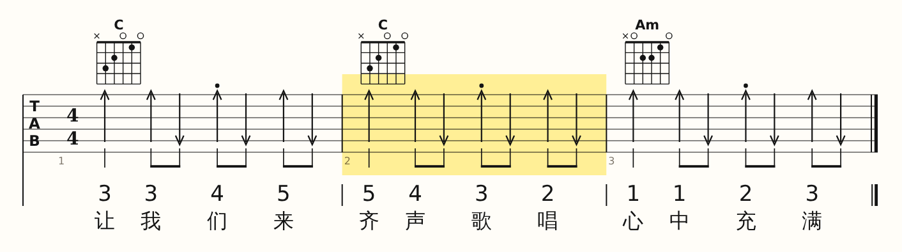
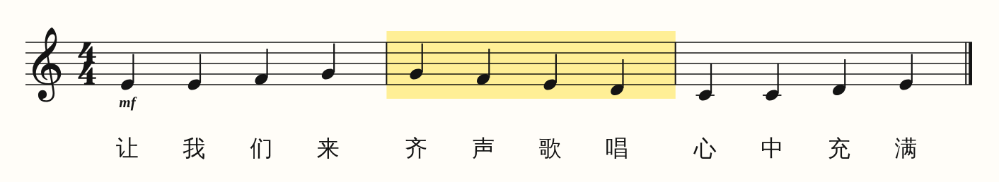
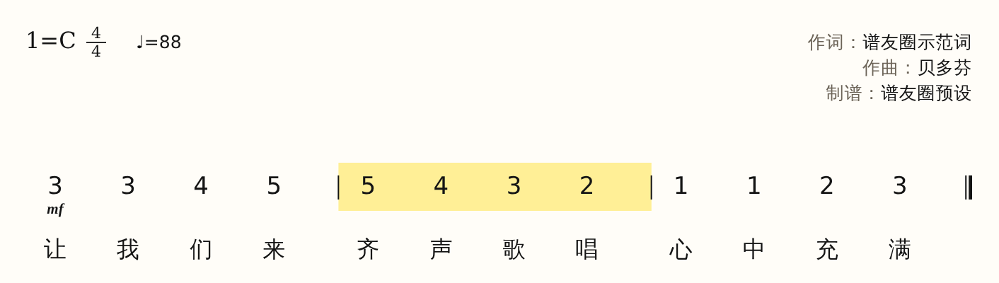
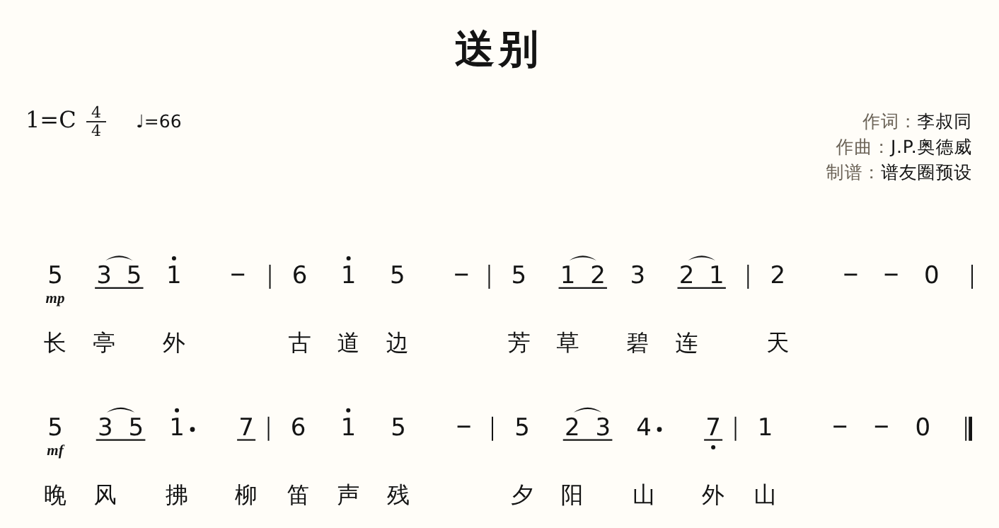
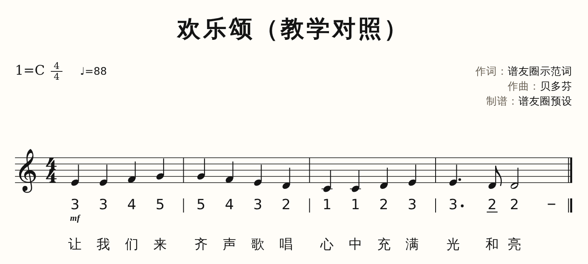
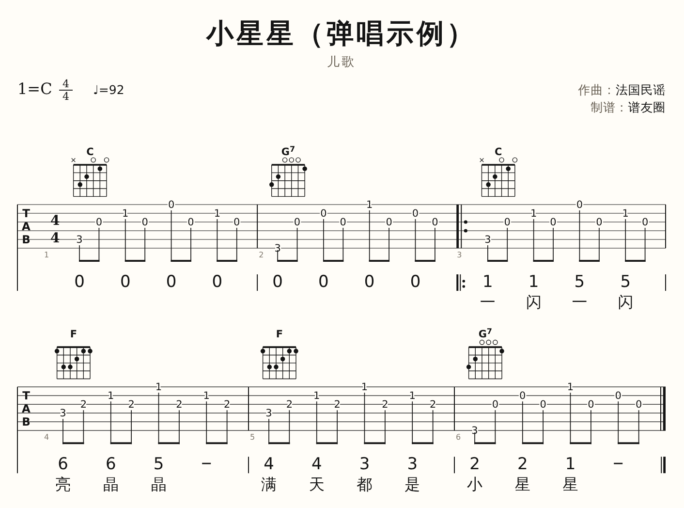

谱友圈
专业曲谱平台
把一条旋律写成考场能用的谱：简谱、五线谱、六线谱同一份数据一键互切，出版级刻版、智能配伴奏。给考编、艺考、师范的老师和学生，也给每一位弹唱的人。
全部弹唱钢琴弹唱歌谱教学对照功能谱♥ 收藏
打开浏览器就能用 · 免注册 · 本地实时保存
01 · 三谱同源
写一遍，
写一遍，
三种谱同时就绪
简谱录入、五线谱交作业、六线谱给吉他手——它们是同一份数据的三种视图。改一个音，三处同步，移调不用重抄。
- 1简谱 · 五线谱 · 六线谱一键互切，教学对照谱逐列对齐
- 2出版级刻版：符干、符杠、间距按《Behind Bars》与国标简谱惯例
- 3MusicXML / MIDI 进出无损，MuseScore、Sibelius 直接打开
TAB · 弹唱

五线谱

简谱 · 1=C

播放到第 2 小节，
三张谱同步划出
三张谱同步划出
为这些课堂和考场而做
全部 8 种谱类 →KAOBIAN · 教师考编
一段旋律，自动配好伴奏
即兴伴奏、弹唱与说课谱。21 套考试标准织体，生成的是可改的真音符。
进入考编工作台 →YIKAO · 音乐艺考
视唱、视奏与伴奏谱，一站出
视唱练耳谱例、器乐视奏五线谱、声乐考试伴奏谱，一份数据三种出法。
看艺考用法 →SHIFAN · 师范生
弹唱伴奏与课堂谱，轻松做
儿歌弹唱、见习课堂范谱、五线谱＋简谱＋歌词的教学对照讲义。
做一份课堂谱 →JIXING · 即兴伴奏
旋律进，双手伴奏谱出
自动配和弦，选织体生成可编辑的钢琴伴奏；级数与音名一键互切。
试一条旋律 →最新上架
全部曲谱目录 →
送别♡

欢乐颂（教学对照）♡
